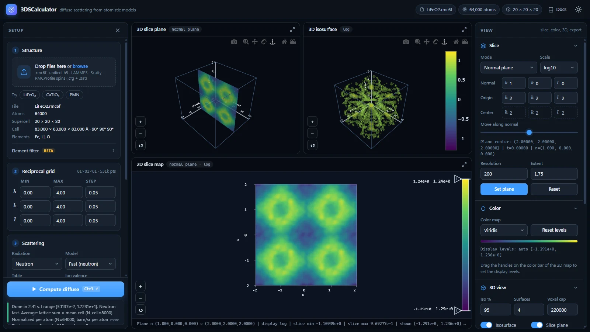

What This Tool Does
The diffuse-scattering tool computes reciprocal-space diffuse intensity I(h,k,l) directly in the browser from an .rmc6f atomistic configuration or a unified structure .h5 file. It is intended for interactive exploration of diffuse features rather than for inverse reconstruction.
Quick Start
- Open the tool.
- Load an
.rmc6ffile, a unified structure.h5file, a LAMMPS data file, or a Scatty spin or atom file (.txt). Or open Examples in the Structure card and pick one; examples also load when the page is opened from disk, except the 30 MB PMN file. For magnetic RMCProfile results, select the.rmc6f, the spin.cfgand the.dattogether. - Check the reciprocal grid. Its size is shown next to the card title.
- Press Compute diffuse or Ctrl+Enter. The default backend is WebGPU; without WebGPU the tool switches to CPU FFT.
- Inspect the 3D slice plane, 3D isosurface and 2D slice map, and adjust them in the View panel.
Input: .rmc6f (+ RMCProfile spin .cfg and .dat), unified structure .h5, Scatty spins/atoms .txt, LAMMPS data
Output: diffuse volume + slices + exports (.h5/.dat/.json/.vtk/.cube/.csv/.svg/.html)
LiFeO2.rmc6f. The Setup panel on the left holds the structure, reciprocal grid, scattering and computation settings, with the Compute button and status line at its foot. The three views sit in the middle. The View panel on the right holds the slice, color, 3D view and export tools.Precision Notice
fp32) and do not provide fp64 arithmetic. Small numerical differences, rounding-sensitive behavior, or precision-related artifacts can appear, especially for large grids, high dynamic range, or cancellation-sensitive features. For important scientific checks, compare against the Exact sum backend on a small grid and test whether the interpretation is stable with respect to backend and grid settings.Layout And Views
| Area | Contents |
|---|---|
| Setup (left) | Four cards in workflow order: Structure, Reciprocal grid, Scattering and Computation. Compute diffuse and the status line stay at the foot of the panel. Click the status line to read the whole message, including timings. |
| 3D slice plane | A planar cut through the diffuse volume in reciprocal space. |
| 3D isosurface (3D cube) | Constant-intensity surfaces of the diffuse volume, or the volume as a cube with one octant cut away (Volume in the 3D view tools). |
| 2D slice map | The current slice in a 2D frame, with a color bar whose handles set the display levels. |
| View (right) | Slice, Color, 3D view and Export sections. Each section folds, and the browser remembers which ones are open. |
The plots follow the theme: white backgrounds with dark axes and labels in the light theme, black backgrounds in the dark theme. Switching themes redraws them.
Drag the handles between the views, and between the views and the side panels, to change their sizes (arrow keys move a focused handle). The layout is remembered; double-click a handle to reset it.
The button in the corner of each view maximizes it; press it again or Esc to restore. On tablets and phones the Setup panel opens from the menu button (or the Setup tab), the View tools follow the views, and a floating button starts the computation.
How To Read The Views
- Localized superlattice condensation appears as concentrated intensity near specific reciprocal positions.
- Manifold-like or sheet-like short-range-order scattering appears as extended diffuse surfaces.
- Rod-like diffuse scattering indicates strongly anisotropic correlations.
- Changing the plane position reveals how the same diffuse object intersects different slices.
For sample-specific examples of these patterns, see the examples guide.
Slice Modes
| Mode | Meaning |
|---|---|
| Axis | Fix one reciprocal-lattice coordinate and inspect a conventional crystallographic section. |
| Normal plane | Define a custom plane by its normal and slide it through reciprocal space. |
| Volume average | Average the diffuse intensity over a slab around the current plane. |
A grid that is a single plane, one point along h, k or l, opens in axis mode on that plane after the first compute on it. Each pixel is then a computed point. You can still switch modes, and later computes on the same grid keep your choice.
Volume Average Mode
Volume average mode is designed for broad or noisy diffuse features. Instead of sampling one infinitely thin plane, the calculator evaluates multiple parallel planes and averages them into a slab view.
- Slab ±: half-thickness of the slab in HKL units. Larger values integrate through a thicker reciprocal-space region.
- Slab N: number of sample planes inside the slab. Larger values give a denser average through the same thickness.
Use this mode when a single normal plane looks too sparse, noisy, or overly sensitive to exact plane placement.
Computation Controls
| Control | Purpose |
|---|---|
| Backend | The transform engine; see Backends. Changing it applies that backend's tolerance, upsampling and safety-limit preset. |
| Safety limit | Grid points per chunk on the WebGPU backends, and the largest grid the CPU backends accept. |
| Subtract average | Subtract the coherent average-structure contribution so the result emphasizes diffuse scattering rather than the total intensity including Bragg-like contributions. Needs per-atom unit-cell references; it is switched off for LAMMPS data and for unified files without atom_unit_cell. |
| Lattice centring | The centring of the average lattice (auto, P, I, F, A, B, C, R). No average is subtracted at reflections the centring forbids, where all the scattering is diffuse. Auto detects the centring from the mean cell and shows it, e.g. auto (F) for the rocksalt examples; see Theory. |
| Normalize | Divide the intensity by the number of atoms (default; barn/sr per atom for neutrons), by the number of grid points (legacy), or not at all. |
| Laue symmetry | Average the calculated intensity over the points equivalent by a Laue class, as Scatty's SYMMETRY option does: −1, 2/m (b unique), mmm, 4/m, 4/mmm, −3, −3m1, −31m, 6/m, 6/mmm, m−3 or m−3m. The trigonal and hexagonal classes use hexagonal axes. It is applied after several configurations are averaged, and before smoothing. Equivalents that fall off the grid are skipped, so use ranges symmetric about 0 with equal steps along equivalent axes. The status line gives the fraction of equivalents on the grid, and warns when the cell does not have the class's symmetry. Symmetrizing mostly averages out the speckle of a single configuration; for the MnO 160 K example compared with Paddison's data, m−3m lowers Rwp from 9.8% to 9.7%. |
| Magnetic (Scattering card) | For spin configurations (see Magnetic Input) with neutron radiation: nuclear only, magnetic only, or nuclear + magnetic scattering. Value at Q = 0 (default (2/3)|ΔM|², or 0 as in RMCProfile) and the paramagnet switch set the Q = 0 convention and the optional ideal-paramagnet subtraction; see Theory. These controls appear once spins are loaded. |
The log10/linear choice is the Scale in the Slice section; the next compute keeps it. See Theory for the equations behind these controls.
Modulated And Incommensurate Structures
Modulation is an optional tool. Its section in the Structure card is hidden for ordinary structures. It appears after Examples → Modulations → Modulate the loaded structure, for your own data, and stays while a modulation is applied.
The Modulation section applies a wave to the loaded structure. The wavevector q is in reciprocal-lattice units of the parent cell and may be irrational. The phase at atom j is θj = 2π q·rj + φ, with rj the unmodulated position.
| Kind | Wave |
|---|---|
| Displacive wave | uj = A e sin θj, with the amplitude A in Å along [u v w]. Nuclear satellites appear at G ± mq with intensities ∝ Jm(Q·eA)². |
| Spin-density wave | μj = A e cos θj, with A in μB along [u v w]. |
| Helix | μj = A (e1 cos θj + e2 sin θj), rotating in the plane perpendicular to the axis [u v w]. The axis parallel to q gives a proper screw; an axis in the plane of q gives a cycloid. |
Magnetic waves replace the moments of the chosen elements (all atoms if the field is empty); the form factors can be changed in the species table. Remove restores the original structure.
The box is computed as a finite crystal, so an incommensurate q needs no periodic approximant. Satellites sit at G ± q with the finite-size width 1/N of the box (N cells) along each incommensurate direction. Use a grid step finer than 1/N along those directions to resolve them, and the supercell step elsewhere; the status line gives the width. Average subtraction removes only the main Bragg peaks and keeps the satellites. The results match the exact satellite theory (Bessel orders for displacive waves, N²p²f²A²/2 for a proper helix, and the finite-box formula for an incommensurate spin-density wave, tests/modulation.test.js).
A modulation in step throughout the crystal gives sharp satellites. Diffuse scattering comes from a modulation whose phase is lost over some distance. The KCP Pt chains example (Examples → Modulations) is the classic case. KCP, K2Pt(CN)4Br0.3·3H2O, is a one-dimensional metal: its Pt atoms form chains along c, 2.89 Å apart, and the chains are 9.87 Å apart. Each chain has a Peierls wave, a longitudinal displacement with q = 2kF = 0.85 per Pt spacing, but at room temperature the chains are not in step. The example loads only the Pt atoms, 17×17 chains of 40 Pt with 0.03 Å waves (tools/make_modulation_examples.py), each chain with its own phase. It shows the volume as a cut-away cube, on a log scale.
- With no phase relation between the chains, the satellites at l = n ± 0.85 spread over all h and k: diffuse sheets, the planes Comès and co-workers found by X-ray diffraction (1973).
- The sheets grow as l2, since the displacements are along c. The faint sheets between them are the second order, at l = n ± 1.7.
- The phases follow a sequence whose correlation between any two different chains is zero, so the sheets are smooth from one configuration. Random phases would give the same sheets only on average, with speckle that many configurations would have to average out.
For a modulation in step throughout, load Examples/modulation/Cr_bcc.rmc6f, a plain bcc Cr box of 21×21×21 cells. Open Modulate the loaded structure and apply chromium’s transverse spin-density wave: q = (1 − δ, 0, 0) with δ = 1/21, close to Cr’s 0.048, and moments of 0.5 μB along b. Compute the magnetic scattering of the (h k 0) plane in steps of 1/21, without smoothing, on a linear scale.
- Satellite pairs sit at (1 ± δ, 0, 0) and (2 ± δ, ±1, 0), and nothing remains at (1 0 0) itself.
- Around (0 1 0) the satellites almost vanish. There Q is nearly parallel to the moments, so their perpendicular component is about δ of the full moment. This polarization factor is how neutron diffraction tells a transverse SDW from a longitudinal one.
- Smoothing would merge satellites 2δ apart into one peak, which is why smoothing stays off here.
Loading Intensity Data
Besides structures, the calculator reads reciprocal-space intensities given as lines of h k l I. A fifth number on every line is read as the uncertainty σ, as in Spinteract's h k l intensity error; Scatty writes 1 there. Lines with more numbers are read as h k l I. Such data go straight into the three views and the exports, with no structure and no computation, and a calculation can be compared with them:
- Scatty's calculated intensities,
[title]_[name]_sc_list.txt. - Spinteract single-crystal data, such as
MnO_xtal_data_01.txt.
The points must lie on a regular grid along h, k and l; grid points without a line (masked data) stay empty in the maps. A single plane, such as Scatty's (hk0), opens in axis mode on that plane. Files of hundreds of megabytes are read in chunks.
The 3D views need the unit cell. Load the matching Spinteract configuration (MnO_config.txt for MnO_xtal_data_01.txt, before or together with the data) or a structure; otherwise the axes are drawn as cubic in reciprocal-lattice units. The grid fields take the data's grid, so a structure computed next lands on the same points.
Scatty's settings files (scatty_config.txt, ..._scatty_info.txt) hold no structure or data and are refused with a hint.
Several Configurations
One configuration of a disordered system gives a speckled pattern: its intensity at each point fluctuates around the thermal average. Select several configurations of the same system together, such as RMC runs or Monte Carlo or MD snapshots, and a compute averages their intensities. The Structure card then shows the number of configurations.
- They must match the first one in atom count, elements, supercell, cell (to 0.1%) and magnetic species. A file that does not match replaces the others, with a warning.
- Each configuration is computed with the same settings: average subtraction, element filter, modulation and scattering type. Smoothing is applied once, to the average.
- Changes in the magnetic species table apply to every configuration.
- RMCProfile spin
.cfgfiles attach to one structure only, so a set whose first member has attached spins cannot be computed. Use self-contained spin files, such as Scatty's, for magnetic sets. - Compute time grows with the number of configurations. The
.jsonexport lists the files averaged.
For the MnO 160 K example, one snapshot compared with Paddison's data gives Rwp 12%, 8 snapshots about 10%, and 32 snapshots 9.2%.
Comparing With Data
Load intensity data and a structure, in either order, and compute. Loading a structure keeps the data and sets the grid fields back to the data's grid, so the calculation lands on the data's points. The Compare with data card then opens at the top of the View panel. It fits the calculation to the data by weighted least squares, as Spinteract does:
Imodel = s Icalc + b + c |Q|, with weights w = 1/σ2, or equal weights when the data have no σ.
| Control or value | Meaning |
|---|---|
| Calculation, Data, Difference | What the views show. Calculation is Imodel, the calculation scaled to the data, and it shares its color range with the data, so switching between the two compares like with like. Difference is data − Imodel on the data's grid. |
| Fit scale | Refine s. Off holds s = 1, for data and calculation in the same units, such as Scatty's list for the same configuration. |
| Background | None; Flat, which refines b; or Flat + c|Q|, which refines b and c (per Å−1). |
| Points | The data points in the fit. Its tooltip lists those left out: masked points, points without σ > 0 (as in Spinteract), points without a calculated value, points outside the calculated grid, and Q = 0. |
| Rwp | 100 √(χ2 / Σ w I2) with χ2 = Σ w (I − Imodel)2, Spinteract's definition. |
| R | 100 Σ|I − Imodel| / Σ|I|. |
| χ2/(n − p) | Shown when the data give σ that varies; p counts the refined parameters. |
- The Difference view switches to a linear scale and the diverging Blue-red color map. Its levels are symmetric about zero, at the 99.5th percentile of |difference|. Red is where the data exceed the model. Leaving the view restores the previous scale and color map. The 3D isosurface draws surfaces at ±t, where t is the Iso % percentile of |difference|. Excluded points are blank.
- When the calculated grid is not the data's grid, only the points they share are compared, and Use the data grid sets the grid fields back. Compute again to compare on every point.
- Exports write what the views show. File names end in
_scaledfor the scaled calculation and_differencefor the difference, and the.jsonoptions record the fit. - The × on the card removes the data. The views then show the calculation as computed.
Magnetic Input
Magnetic scattering needs a moment on each magnetic atom. Three sources are read:
| Source | Files | Moments and form factors |
|---|---|---|
| RMCProfile (magnetic RMC) | .rmc6f, spin .cfg (legacy or version 2), and the .dat control file | Unit spin vectors times MAGNETIC_MOMENTS (μB) of the MAGNETISM block. FORM_FACTOR records give ⟨j0⟩. |
| Scatty | [stem]_spins_NN.txt | SPIN components along a, b, c in μB. Form factors and C2 come from the file. |
| LAMMPS | Data file with atom_style spin | The spin direction, normalized as LAMMPS does, times sp (μB). Form factors are the neutral atom's, since LAMMPS SPIN mostly models metals. For an ionic compound, choose the ion in the species table. |
Select the RMCProfile files together, or load the .rmc6f first. The spin file attaches to the loaded structure, and the .dat can come before or after it.
The MnO spins example buttons load Examples/magnetic. random is a random configuration as a Scatty file, an ideal paramagnet as at infinite temperature. It sets the grid to −2…2 in steps of 1/6, and after the first compute the slice opens on the h = ½ plane. The folder also holds the MnO type-II antiferromagnet, to load by hand: as a Scatty file (MnO_order_spins.txt), and in RMCProfile's format (MnO.rmc6f, MnO_spins.cfg and MnO.dat, selected together). It is a perfect crystal, so its nuclear diffuse scattering is zero after average subtraction, and its magnetic scattering is sharp Bragg peaks at (½ ½ ½)-type positions.
The 160 K button loads paramagnetic MnO: 8 Monte Carlo snapshots (16×16×16 cells, 16,384 spins each) of the J1–J2 Heisenberg model, using the couplings Paddison refined with Spinteract against single-crystal data at 160 K (J1 = 3.26 K, J2 = 4.45 K). A compute averages the 8 snapshots (see Several Configurations), and the volume view opens as a cut-away cube. The scattering is diffuse, with broad maxima at the (½ ½ ½)-type positions where the antiferromagnet has its Bragg peaks. Against Paddison's data, which ship with Spinteract as MnO_xtal_data_01.txt, the average fits with Rwp about 10%; Spinteract's own fit gives 8.8%. tools/make_mno_160k_spins.py writes the snapshots.
The LAMMPS spins button loads an atom_style spin data file from Examples/lammps; the folder holds a second one to load by hand. tools/make_lammps_examples.py writes both. Each example sets its magnetic mode, so the result does not depend on the example opened before. Every example also sets its grid range, smoothing and average subtraction.
- Fe bcc: 10×10×10 bcc cells with 2.2 μB spins tilted about +z (⟨cos θ⟩ = 0.8) and random displacements, computed as nuclear + magnetic. Ferromagnetic Bragg peaks sit on the nuclear ones, on top of paramagnetic and thermal diffuse scattering. After the first compute the slice opens on the l = 0 plane.
skyrmion_film.data, to load by hand: a triangular Fe monolayer of 60×60 sites in a triclinic box with a triple-q skyrmion lattice of period 10 sites (topological charge −1 per magnetic cell). Compute it as magnetic only on the l = 0 plane (h and k from −15 to 15 in steps of 1) and view it on a linear scale. The map shows six satellites around the origin, as in small-angle neutron scattering from a skyrmion lattice. The spot at the origin is the net magnetization. On a log scale, the weaker higher harmonics appear too, such as (12 0 0) and (6 −6 0).- For LAMMPS data the cell is the whole box, so h, k, l count reciprocal-box units, and the grid step starts at 1. Bcc (1 1 0) is (10 10 0) in the Fe example, and the skyrmion satellites lie at (6 0 0), (0 6 0), (6 6 0) and their opposites.
- A periodic box scatters only at integer box units, its reciprocal lattice. Between them, a finite box shows only its size fringes, which fall off slowly from every strong peak. A step of ½ therefore fills the map with stripes that are not in the structure.
- Spin j of magnetic species t is the j-th atom of atom type t. The type order is that of the
.datATOMSline, or else the rmc6f "Atom types present". Version-2 files name the atom of each spin. - When the
.rmc6fhasLattice vectors, spins are rotated from that frame into the calculator's frame (c along z). - A loaded MAGNETISM block stays active for later spin files until a structure with other atom types is loaded.
After loading, a species table in the Magnetic part of the Scattering card lists each magnetic species. Changes apply at the next Compute diffuse.
| Column | Meaning |
|---|---|
| Form factor | The coefficients from the file, or an ion from the table of 155 ions. Without a .dat, RMCProfile species start with the element's usual ion: 3+ for rare earths and actinides, 2+ otherwise. LAMMPS species start with the neutral atom when the table has it, and otherwise with the usual ion. |
| C2 | The weight of ⟨j2⟩. Its tooltip gives (2 − gJ)/gJ for 4f and 5f ions. It is disabled when the form factor has no ⟨j2⟩ part. |
| μ (μB) or Scale | The moment per spin for RMCProfile spins, or a factor on the file's moments for the other sources. |
A tabulated MAGNETIC_FORM_FACTOR_FILE is not read. Choose the ion in the species table instead.
Element Filter
The Element filter in the Structure card is an experimental feature that lets you include or exclude specific elements from the scattering calculation. This is useful for partial diffuse-scattering views, but it changes the meaning of normalization and average subtraction.
Smoothing Controls
The 3D smoothing controls, folded inside the Computation card, operate on the computed 3D intensity volume before visualization.
- Smooth the computed volume: enable or disable smoothing of the diffuse volume.
- Filter: choose between Lanczos and Chebyshev.
- Cheb dB: controls the Chebyshev attenuation parameter.
- Scale: controls the smoothing kernel size relative to the supercell-driven baseline.
Lanczos is a good general-purpose smoothing filter. Chebyshev is more tunable and can produce stronger suppression of ringing depending on the chosen dB value.
Smoothing keeps the intensity level: the kernel has unit sum, and near the edges of the grid it is renormalized over the part that lies inside, so a flat pattern stays flat. Sharp features become lower and wider, with the same integrated intensity.
The kernel is the transform of a window as long as the supercell along each axis, times Scale, with one point per spacing of the box's reciprocal lattice (1/supercell in r.l.u.). On a grid with another step the kernel is resampled, so the smoothing has the same width in r.l.u. whatever the step. For LAMMPS data the box is the cell, so the kernel is Scale box units long; at Scale 1 it is a single point and smoothing is skipped.
Smoothing merges features closer than a few spacings of the box’s reciprocal lattice, such as the satellite pairs of a modulation, so turn it off for sharp features. Smoothing also averages out the speckle of a single disordered configuration. For the MnO 160 K example compared with Paddison's data, Rwp is 15% without smoothing and about 10% with it. The window type matters much less: Lanczos, Chebyshev 100 dB and Chebyshev 60 dB are within 0.3% of each other.
Backends And Scattering Choices
- wgpuNUFFT type-1 (WebGPU): the default and fastest path. The uniform grid is evaluated as a type-1 NUFFT on the GPU with phases prepared in
fp64, and each run is spot-checked against exact sums (the value is shown in the status line). - Type-3 + webgpufft (WebGPU): the earlier WebGPU path, kept as a fallback.
- CPU FFT: the preferred fallback when WebGPU is unavailable.
- type3NufftCpuDirect: the NUFFT evaluated in
fp64on the CPU; accuracy follows the tolerance (1e-9 by default). - Exact sum: the exact
fp64sum over atoms and grid points; slow, limited to about 2×108 atom–point pairs per transform, and meant as the reference for small grids.
The UI also supports neutron, X-ray, and electron scattering options with model/table selection.
Practical default grid-limit presets are backend-dependent: the WebGPU presets use 8,000,000 voxels per chunk, while the CPU FFT and type3NufftCpuDirect presets use 120,000 voxels and the exact sum uses 20,000. These are practical defaults, not hard physical limits, but they are the right starting point for sizing runs.
Supplementary Material
Backend provenance, scattering-table families, and citation-oriented notes are collected in Diffuse Scattering Supplementary.
3D View Controls
- Volume: what the volume view shows, Isosurfaces or a Cut-away cube. The cube draws the six faces of the grid volume and removes the octant toward the default camera, where h, k and l are beyond the cut point. That exposes three planes through the cut point, as in Paddison's figures. The cut point is the grid point nearest the origin, or the middle of an axis that does not contain 0. Faces use the colors and levels of the 2D map and are sampled at up to about 160 points per side. Cut size sets how much is cut away: nothing at the left end, the planes through the origin in the middle, and the far corner at the right end.
- The h, k and l axes, with their ticks, run along the box edges that face the default camera: K on the positive-H side, H on the positive-K side, and L up the left edge.
- Iso %: selects the intensity percentile used for the isosurface threshold. For example, 95 means the isosurface is built from the top 5% of intensity values in the sampled 3D volume.
- Surfaces: number of isosurfaces rendered.
- Voxel cap: downsampling limit used before isosurface rendering to keep the 3D view tractable.
- Volume, Slice plane, 2D map: show or hide each view's content. With the 2D map off, the 3D views take the full height.
- Auto refresh: redraw the 3D views when the slice or these settings change; otherwise use Render 3D.
- When a new plane would be seen edge-on in the slice-plane view, such as the (h h l) plane from the default camera, the camera turns toward the plane's normal. Your own rotations are kept.
Exports
- Full diffuse volume: unified data
.h5,.dat,.json,.vtk, and.cube - 2D slice: CSV and SVG
- 3D plots: Plotly HTML and SVG exports
File name sets the export filename prefix; when empty it is derived from the structure file. The Slice window Open button shows the current 2D slice in a separate browser window for side-by-side comparison. VTK and Cube export expect uniform axes; if the reciprocal axes are not uniform, those exports are intentionally rejected by the tool.
For sample-specific workflows, use the examples guide.